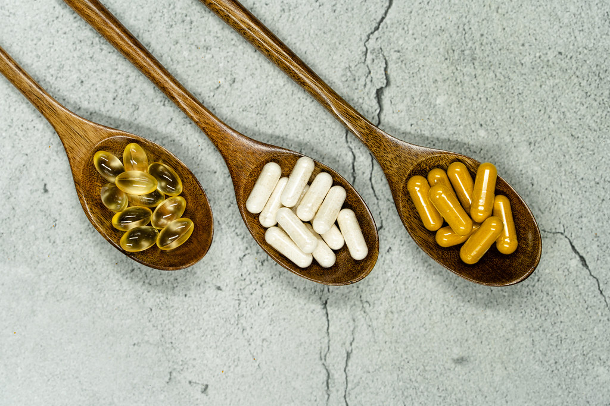
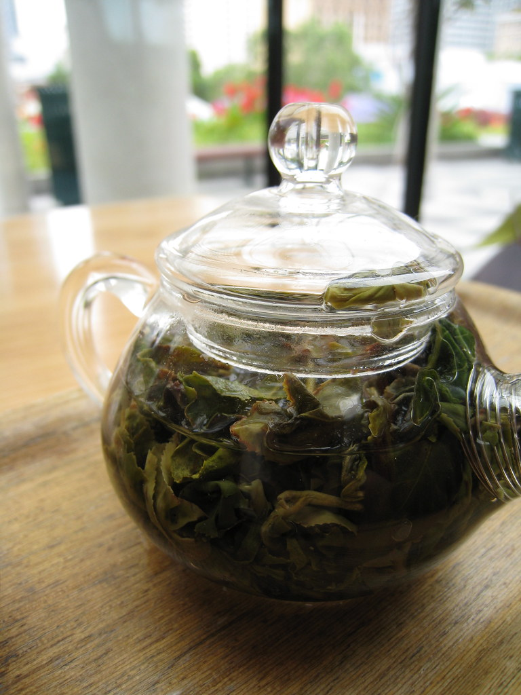

Why a Steady Routine Beats a Strict One
The plan you can repeat on a tired Tuesday will always outperform the one that only works on a perfect day.

How to Read a Supplement Facts Label
A short, plain guide to the panel on the back, so you know exactly what you are paying for.
What a Proprietary Blend Actually Hides
That single mysterious number on the label is doing more work than you think, and not in your favor.
The After-Dinner Walk, the Simplest Habit
Ten quiet minutes after the last meal of the day, and almost nothing standing in your way.

Building a Breakfast You Will Actually Repeat
Forget variety for a moment. The best breakfast is the boring one you can make half asleep.

Cinnamon, from Market Stall to Capsule
A spice with centuries of kitchen history, and a few honest words about what that history is and is not.
Trace Minerals, Plainly Explained
What people mean when they say trace mineral, and where chromium sits in the picture.

Fibre Without the Fuss
No counting, no powders, no elaborate plans. Just a few easy ways to eat a little more of it.
The Quiet Case for Cooking at Home
Not for the photos or the flourish. For the plain control it gives you over what ends up on your plate.

Hydration Without Overthinking It
Skip the rules about exact glasses. A few simple cues do the job better than a number ever could.
Sleep and the Morning After
Why the quality of your night quietly shapes the choices you make all the next day.
Stress, Breath, and the Long Day
A handful of seconds of slow breathing, used on purpose, can change the texture of a stressful afternoon.
Why We Print Every Amount
A short note on a simple decision: showing the exact figure beside every ingredient, with nothing hidden.
Bitter Foods and the Global Pantry
Bitter melon, mulberry, and juniper have long histories in kitchens around the world, well before any capsule.
Starting Small: The One Percent Habit
The change too small to fail is usually the only one that lasts. Here is how to use that on purpose.